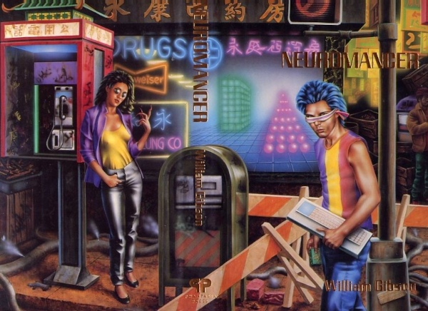
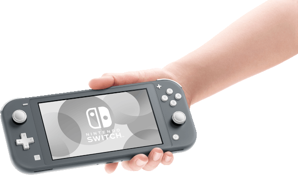
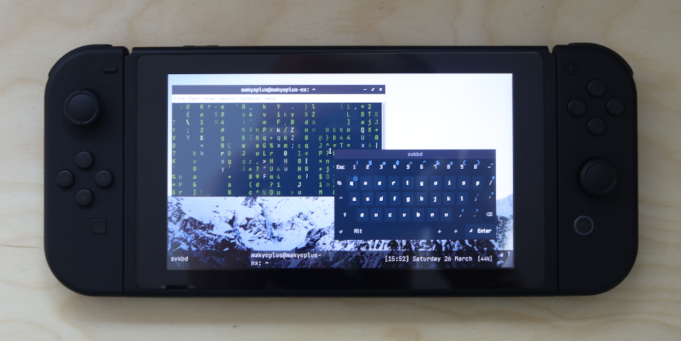
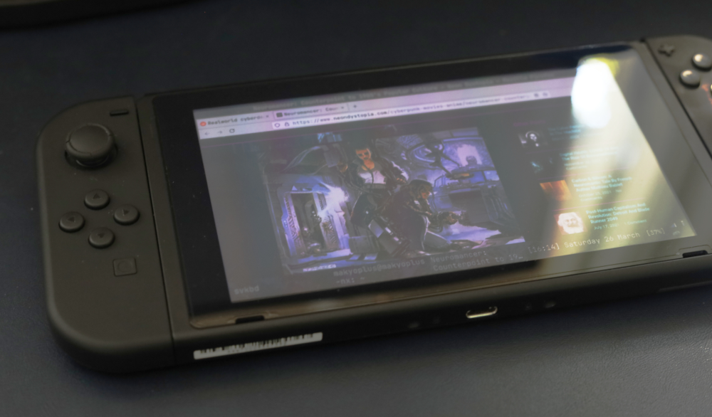

by William Gibson in the Sprawl Trilogy in the 80s, used to jack the user into virtual networks, modified to suit the the individual user's tastes (and definitely NOT a laptop).

The evolution of SBCs, led by the ubiquitous Raspberry Pi, has spawned a community of makers and creators, showing off their creations in the cyberdeck subreddit and cyberdeck cafe,
ranging from what has become the standard Pi-in-a-Pelican-case build, to more bespoke devices in all kinds of form factors.
On the other hand, various commercial production units, predominantly gaming-focused, have been developed and are in various
stages of avalability or planned release, the most notable being the Valve's Steam Deck, and others including GPD's and Aya Neo's offerings, OneXPlayer ect.
Starting with my Gameboy Pocket at the age of 5 or 6, and continuing with a steady diet of consumer electronics and personal computing devices,
both owned and depicted in media consumed throughout my childhood and adolescence (including iPods, pokedexes, digivices, graphics calculators etc.),
I've always been fascinated with the idea of a multipurpose, portable, handheld computer.

Ideally such a system would be highly portable, customisable, with adequate processing power, suitable for accessing the web, consuming multimedia, gaming and coding,
with a user interface and input scheme suitable for on-the-go use (i.e. more portable than a laptop), but also the ability to easily connect a higher bandwidth input interface
(ie. keyboard) to allow easy use as a general personal computer without too much compromise in usability.
In recent years, and I've tried my hand at the diy approach with several iterations of diy/custom devices, as well as several production units.
Whilst each has had its particular merits, none of these devices have proved to be the definitive multipurpose deck suitable for everday use.
Enter the Switch; Nintendo's most recent gaming console offering, a handheld/home-console hybrid released in 2017, with several iterations and revisions having been released since.
A system built around Nvidia's ARM-based Tegra X1 SOC, and delivered in a sleek handheld format (like it's predecessors), the Switch runs Nintendo's proprietry OS Horizon,
which is notoriously locked down, allowing the use of Nintendo-approved apps and games, and not much else.

Thankfully for tinkerers, in 2018 an exploit was discovered (Fusee Gelee) allowing the execution of arbitrary code on the Switch.
The exploit involved a flaw that could not be patched after the unit had left the factory, meaning that any unit produced and released into circulation before Nintendo became aware
of the flaw and implemented a fix, could be hacked and run custom code.
The exploit is tethered, meaning the Switch must be booted into recovery mode, and another device (PC, phone or dongle) used to inject a payload, after which point custom software may be run.
(Modchips have been developed allowing the hacking of later, patched switches, but for various reasons the availability of these has been limited, and thus using unpatched
Switchs has remained the predominant means of running unsigned code on the units.)
A large Switch-hacking community has arisen, with a custom bootloader Hekate, custom OS Atmosphere, and custom Android and Ubuntu ports (and much, much more content) being developed,
to open up the hardware and expand the functionality of Nintendo Switch.
Being lucky enough to possess an unpatched Switch, I spent some time tinkering with L4T Ubuntu, an incarnation of the Linux-based operating system based on Nvidia's Linux for Tegra project.
I soon realised that the Switch running L4T Ubuntu could be a great candidate for a cyberdeck, with in my eyes, the ideal handheld form factor, and the functionality and customisability of Linux.
After installing L4T Ubuntu on my Switch, and set about customising the UI, installing the Openbox windows manager, configuring the joycon inputs to control the mouse, open menus and for other shortcuts,
installing Tint2 taskbar, suckless's svkbd as an onscreen keyboard ect.
I dubbed it the NX-Deck.
Over the next couple of months I used the NX-Deck on and off, including taking it with me on a week-long road trip as my sole computer.
With the UI dialed to my preference, the NX-Deck was great for surfing the web, streaming videos, downloading files and various other general personal computing tasks.
As expected, inputing using the onscreen keyboard was arduous, but using an OTG adaptor I was able to plug in a keyboard if I needed one (such as for coding), as well as to plug
in a USB for file transfer or other peripherals.
I got openVPN up and running satisfactorily, and was able to use youtube-dl with no problems. I could easily *switch* back to the stock OS and play game cartridges if the urge arose.
It felt like the NX-Deck had almost realised the dream of the cyberdeck - a slick, general purpose portable computing device for on-the-go.

There were some issues however, that prevented the complete realisation of the cyberdeck dream.
Unfortunately, my NX-Deck was unstable with regards to waking up from sleep mode, (I have a feeling it was to do with Openbox or my other customisation, though I'm not sure),
sometimes not waking up at all, and requiring a hard reset of the system. This meant I had to power it down between uses.
As mentioned above, when the Switch is powered on, a computer or the RCM-loader dongle is required to inject a payload and run unsigned code such as L4T Ubuntu.
Whilst this process isn't at all complicated, it was disruptive enough to interfere with the user experience.
Furthermore, as anyone who has tinkered with Linux may have experienced, in tinkering it is easy to break the install beyond your capacity to repair,
requiring a reinstall of the OS to get back to a usable state. This occurred to me several times. Given the tenousness of a hacky linux OS running on locked down Nintendo hardware,
this and other system stability issues can only be expected, but nonetheless interfered with the user experience.
At one point I installed Schismtracker to dabble in some music production on the go, and after loading it up, something in the system-wide audio configuration broke, with any sounds played
(even programs outside of Schismtracker) coming out as garbled and sped up. This persisted after system-wide restart as well as restarting and reinstalling pulse-audio and alsa,
and ultimately I had to reinstall the OS, again starting from scratch.
Although thoroughly impressed with the range of software that I could get running, here and there certain software would not work 100%.
For example the inbuilt videoplayer mpv worked fine with most video formats I tried it with, but videos of certain formats wouldn't work.
Using feh to load a random background image from a folder whenever I logged in, every now and then an error was thrown up and the jpeg would load.
Whilst trivial on their own, these small incompatibilities added up in their inconvenience.

To reiterate, these issues aside, the experience using the NX-Deck was a great one.
Using preexisting opensource tools I was able to create a custom UI, which coupled with the Switch's form factor, felt like solid steps towards a cyberdeck fit for everyday use.
The system stability issues affecting the user experience mentioned above can only be expected when running Linux on a system not designed to run it,
and they should't detract from the truly great achievement of the community that made running a full Linux distro on the Switch possible.
We may be optimistic that some of these issues will be ironed out by others in the community, and indeed community projects such as L4T Ubuntu allow us to contribute our own solutions to share with others,
and provide a solid basis for our own customisation and expression of creativity.
With the increasing DIY and commercial interest in cyberdeck-style PCs, including the impending wide spread release of the Steam Deck (running the Linux-based SteamOS),
we can look forward to further developments in both software and hardware edging us closer to the Ono-Sendai dream, jamming with the console cowboys in cyberspace.

References/Links:
- https://gitlab.com/switchroot
- https://gbatemp.net/threads/l4t-ubuntu-a-fully-featured-linux-on-your-switch.537301/
- https://www.reddit.com/r/cyberDeck/
- https://cyberdeck.cafe/
-mP